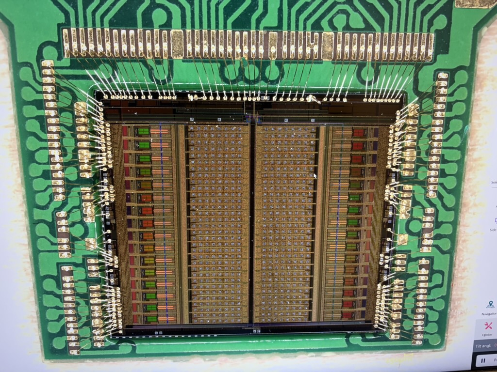
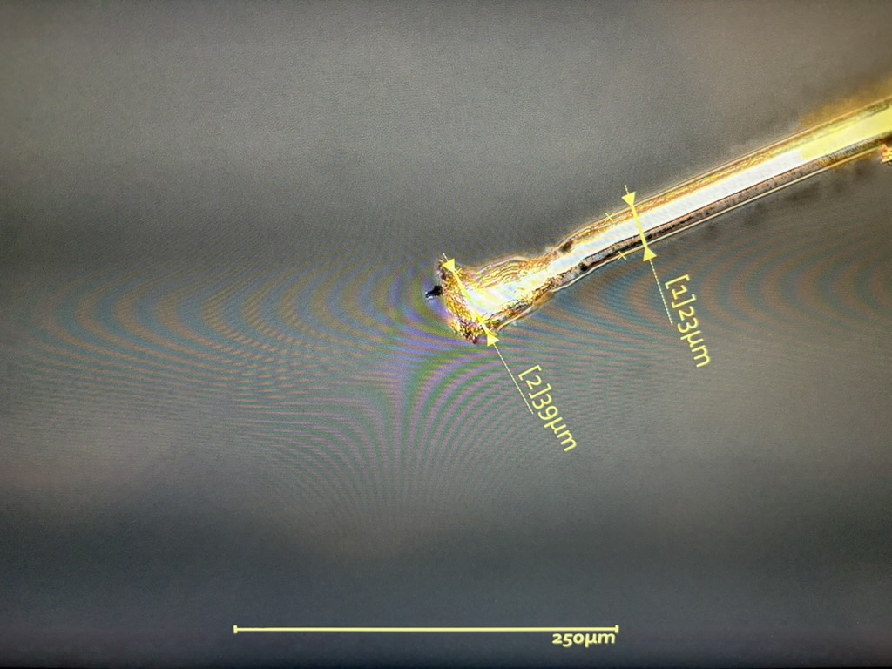

Can one concurrently record electrical spikes from every neuron in a mammalian brain?
In the age of AI.
Weinan Wang · Howard Wang

Drawing: Santiago Ramón y Cajal · scan: Wellcome Collection, CC BY 4.0
The question: Kleinfeld, Luan, Mitra, Robinson, Sarpeshkar, Shepard, Xie and Harris, Neuron, 2019
Two sides of one coin: intelligence
Can machines think?In 1948 he sketched machines made of neuron-like units that learn.

 John von Neumann · 1958
John von Neumann · 1958The Computer and the BrainIn 1945 he described the logic of the first stored-program computer with model neurons.
Neuroengineering
Go into the brain itself, and see what is happening.
Artificial intelligence
Take what we know, and build intelligence from it.
Photographs: Turing by Elliott & Fry, 1951, public domain · von Neumann, Los Alamos National Laboratory


The same chip, eight times, and eight times again


From the brain to the computer, one part at a time

For each part: what it does · what we decided · what happens to it at 32K
ProbeBondASICASIC boardPower boardFrontend FPGACableHost boardPC
The probe
512 recording sites on four flexible shanks.

We kept the probe as it is. One for each chip.
At 32KThe same probe × 64
ProbeBondASICASIC boardPower boardFrontend FPGACableHost boardPC
The ASIC board
Two chips and their probes on one board.

One design for the top and the bottom board. Power passes straight through.
At 32KThe same board × 32
ProbeBondASICASIC boardPower boardFrontend FPGACableHost boardPC
The power board
Quiet power for eight chips, from one 3.3 V supply.

One board with two identical ports. The split version ran out of pins.
At 32KThe same board × 8
ProbeBondASICASIC boardPower boardFrontend FPGACableHost boardPC
The frontend FPGA board
Collects eight chips and sends them down one lane.

The FPGA rides on the head, so a head needs only one cable.
At 32KThe same board × 8
ProbeBondASICASIC boardPower boardFrontend FPGACableHost boardPC
One head: eight ASICs in 23 × 47 × 14 mm

22.64 × 47.05 × 13.71 mm · 8 to 10 g, estimated · every board-to-board joint is the same connector (Hirose DF40C, 1.5 mm)
ProbeBondASICASIC boardPower boardFrontend FPGACableHost boardPC
The host board
Powers and clocks up to eight heads, and talks to the PC.

Eight ports since the first version. Today we use one.
At 32KThe same board, as it is
The slowest loop sets the pace of a step


From one head to every neuron
Eight steps. Each one faster than the last.


Drawing: Santiago Ramón y Cajal · scan: Wellcome Collection, CC BY 4.0
The unit is the neuron

2019: can we record from every neuron? Physics says yes.

Kleinfeld, Luan, Mitra, Robinson, Sarpeshkar, Shepard, Xie, Harris · Neuron 103, 1005 (2019) · mouse cortex, recording only · neuron bodies drawn 10 µm across for illustration
Neuroscience is a subfield of neuroengineering

Beyond medicine: who is it for?

Spinal cord injury: 15.4 million (WHO, 2021) · blindness: 43 million (Bourne et al., Lancet Global Health, 2020) · world population: 8.2 billion
We take in a billion bits a second. We put out ten.

In and out: Zheng and Meister, Neuron, 2025 · one head: 4,096 channels at 31.25 kS/s, 12 bit
Each probe technology has a ceiling

The 2019 list: what must be solved

Can we carry the data?

31.25 kS/s, 12 bit per channel · spikes only: 5 spikes/s per neuron, 5 bytes each · NVIDIA Rubin (2026): 288 GB of HBM4 memory per GPU; NVIDIA lists 19.2 or 22 TB/s, the lower is used
20 watts is enough to compute. Not yet to record.

Brain: about 20% of a 100 W resting body, and 20 W ÷ 86 billion per neuron · Raspberry Pi 5: 8 to 10 W, published benchmarks · Rubin GPU: 1,800 to 2,300 W, as reported · target and amplifier: Kleinfeld et al., Neuron 2019
Two kinds of problems

Not much thinking. Still two months.



The difference: can AI see the loop?

The same list, sorted by what AI can see

The sorting is our judgment, not a result
From one chip to 32,768 channels

The slowest loop sets the slope